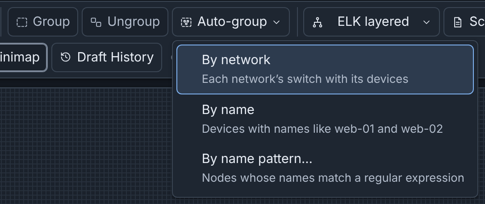
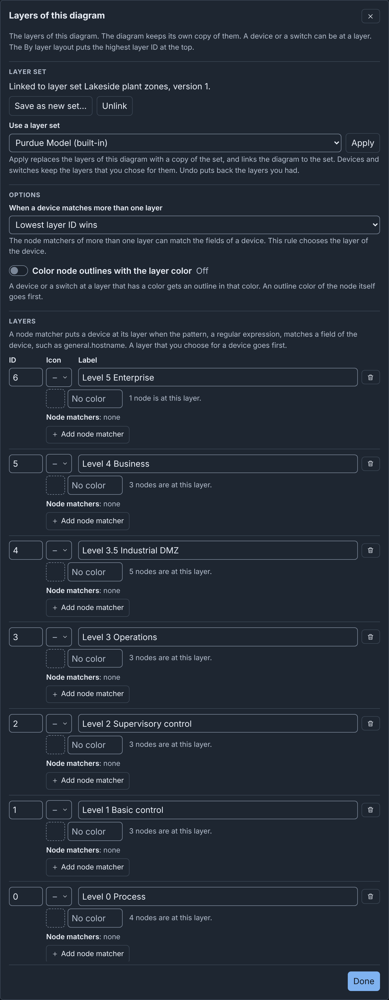
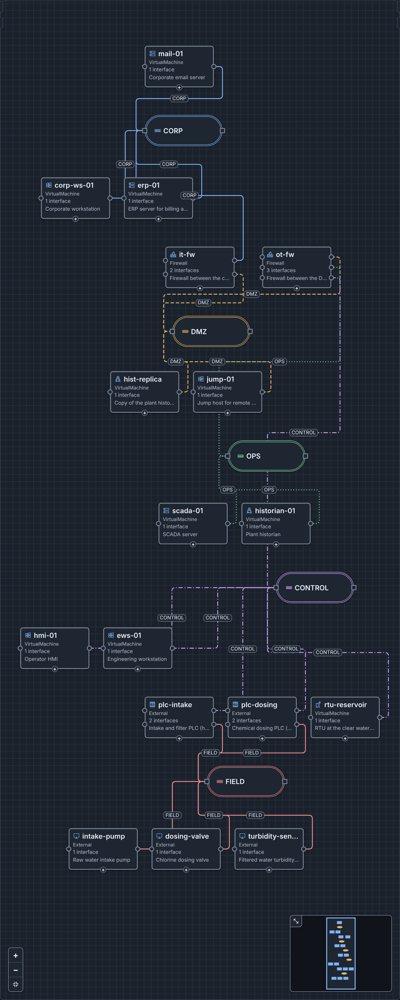
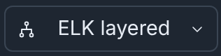
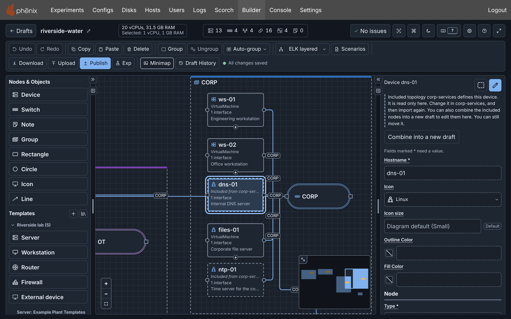

Diagrams¶
This page shows how to draw a diagram, with the Riverside Water draft of the example lab as the example. Keep one idea in mind: a switch is one network, and a connection puts an interface on that network.
What a diagram is¶
A diagram describes one Topology config. Publishing writes only some of its parts:
| In the diagram | In the Topology config |
|---|---|
| A device | A node in spec.nodes, with its settings |
| A switch | A network, whose name is the VLAN of its interfaces |
| A connection | An interface with the network's name as its vlan |
| A device from an included topology | Nothing. includeTopologies names that topology |
| Notes, groups, drawings, colors, icons, layers and templates | Nothing |
Add devices¶
Nodes & Objects, in the left column, lists what you can add. Click an item, or drag it to the canvas. Or press Ctrl+K (⌘+K on macOS) and select Add device in the command palette. Device has default settings. The five built-in templates under Templates set more fields (see Built-in templates and Templates and Icons).
The vrouter app configures a device of type Router or Firewall. An
external device is hardware, such as a PLC. phēnix starts no VM for it, and
its interfaces tell phēnix which VLANs the hardware is on (see
External Nodes).
Networks¶
A switch is one network. To add one:
- Click Switch under Nodes & Objects.
- In the Inspector, set Name.
- Click Apply.
When you rename a network, the VLAN of each interface on it changes.
A network has these optional fields:
- VLAN alias, from 1 to 4094. When you publish with an experiment, it
goes into
vlans.aliases. - Subnet, such as
10.1.0.0/24. - Gateway.
With a subnet, each static interface that you connect gets the next free host address and the subnet's Mask. This needs the Assign addresses on connect setting, which is on by default. If the interface has no Gateway of its own, it also gets the network's gateway.
Assign addresses gives addresses to the static interfaces that have none. Builder never changes an address that an interface has.

A new network gets a suggested subnet, which you can change or clear (see Subnets and addresses).
Connect an interface¶
A connection puts an interface on a network. To connect ws-03 to CORP:
- Drag from the + handle under
ws-03, or from an unconnected connection point on its side, to the CORP switch. A drag from + adds a new static interface. - Select
ws-03. Click Add connection in the Inspector header. Select the switch CORP (CORP), then click Connect. - In the Inspector, click Add interface under Network. Enter
Address
10.10.20.103and VLANCORP, then click Apply.

CORP has no subnet, so enter the address of eth0 in the Inspector, or give
CORP a subnet first. A VLAN that names a network connects the interface to
that network's switch. A VLAN that names no network leaves the interface
unconnected, and a typed VLAN gives no address.
To disconnect an interface, do one of these steps:
- Click Disconnect next to the interface under Connection points in the Inspector.
- Select the connection and press Delete (⌫ on macOS).
The interface stays with no VLAN and blocks publishing.
Hide connections in the command palette hides the connections on your canvas only (see Hiding connections).
Edit device settings¶
Change the fields of a device in the Inspector or the Node Editor, then
click Apply (see The Editor). Interface kind is
Static or OSPF, DHCP or manual or Serial. A new interface is
Static or OSPF with Mask 24. When you change the kind, Builder
asks first, and Switch and clear empties the interface.
Routes and Firewall rulesets are under Network, and the
vrouter app applies them when the experiment starts. Labels and
annotations are under More settings, and Builder reads an annotation
value as YAML. When your role can list the server's disk images, a drive's
Image suggests them (see
Drive images).
To duplicate a device, select it, then press Ctrl+D
(⌘+D on macOS). The copy, such as historian-01-2,
keeps every setting but not its connections. The header says 1 warning
until you give the copy its own hostname and address, and connect it.
Notes¶
A note is text on the canvas, and publishing ignores it. To add one:
- Click Note under Nodes & Objects.
- In the Inspector, enter the Text.
- Click Apply.
Groups¶
A group is a box with a title around nodes, and publishing ignores it. When you move a group, its nodes move with it. To group nodes:
- Select the first node. Then hold Shift and select the others.
- Click Group in the toolbar, or press Ctrl+G (⌘+G on macOS).
Ungroup keeps the nodes and deletes the group. Its key is Ctrl+Shift+G (⇧+⌘+G on macOS). A node that you drag onto a group does not go into it. Click Move to group in the Inspector header instead.
Auto-group in the toolbar puts nodes into new groups:
- By network: each network's switch with its devices.
- By name: devices whose hostnames share a stem, such as
web-01andweb-02. - By name pattern…: nodes whose names match a regular expression (see Grouping by a name pattern).

Drawings¶
Rectangles, circles, icons and lines are drawings. Publishing ignores them, and they take no connections. Add one under Nodes & Objects, then set its fields, such as Label, in the Inspector. A line also has a Line style, arrowhead fields and 2 to 64 Points (see Shapes, icons and lines).

Colors, line styles and icon size¶
Switches, connections, devices, notes, groups, shapes and lines have color
fields in the Inspector. Edge Color of a switch colors its network: its
connections and switch outlines. Outline Color and Fill Color of a
device or a switch take only a hex color, such as #2f6fbf. Enter a color,
or click the swatch button before the field (see
Colors).
Line style, on a network or on one connection, is Auto, Solid, Dashed, Dotted or Dash-dot. Auto selects a pattern by the network's place in the diagram, so that networks differ without color.
Icon size in the Diagram section of the Inspector draws icons at Small, Medium or Large, and a device, a switch or a group can have its own. Two settings change your canvas only: every icon at one size, or no icons (see Your own icon size and hidden icons).
Icons¶

Select the icon of a device, a group or an icon drawing under Icon in the Inspector. The icon is only a picture and changes no setting (see Built-in icons). To show your own image, select Custom icon… at the end of the list. Then upload an image file, or click Use on an icon of the server (see Templates and Icons).
Layers¶
A layer has an ID, from 0 to 99, and a label, and can have an icon, a color and node matchers. A device or a switch can be at one layer. Layers are for the picture only, and an import sets none. A diagram with no layers of its own has 7 placeholder layers (see Placeholder layers).
To set the layer of a device or a switch, select it. Then select a layer
under Layer in the Inspector. A node matcher puts a device at a layer by
its fields, for example hostnames that start with plc- (see
Node matchers). A layer's color can
also outline its nodes (see
Layer outlines). Edit layers…
under Layer opens the layers editor, with a row for each layer and
Add layer.

Layer sets¶
A layer set is a list of layers in the server's library. In the layers editor, Use a layer set gives the diagram a linked copy of a set. Save to layer set saves your changes as the set's next version. Set default on the Layers tab of the drafts page gives each new blank diagram that set (see Layer sets).
Example: the Purdue model¶
The built-in layer set Purdue Model gives each Purdue level a layer, from "L5 Enterprise" (ID 6) to "L0 Process" (ID 0). See Purdue Model layer set. To use it:
- Open the layers editor.
- Select Purdue Model (built-in) under Use a layer set.
- Click Apply.
In Lakeside Water Treatment, each device and switch is at the layer of its Purdue level. To try it, upload lakeside-treatment.builder.json, then select By layer in the layout menu.

Layouts¶

The layout menu in the toolbar arranges the whole diagram.
| Layout | What it does |
|---|---|
| Network cards | A card for each network, the switch above its devices. |
| ELK layered | Clusters each network's switch with its devices, left to right. |
| By layer | Puts the layers from top to bottom. |
| Dagre | Devices beside their switch, networks along the connections. |
| Standard | Every device in a row above the switches. |
ELK layered suits most diagrams. Layouts keep groups together. Right after a layout runs, the menu offers Restore previous layout.
By layer puts the highest layer ID at the top. For nodes with no layer, see By layer.
Arrange by hand¶
Drag a node, or several selected nodes. Press Shift with an arrow key to move them 10 pixels. Or enter X and Y under Position in the Inspector, then click Move. The Snap to grid setting, off by default, puts the nodes that you drag or add on the grid (see The grid).
Copy, paste, duplicate and delete¶
Copy, Paste and Delete are in the toolbar, and Duplicate is in the command palette. Copy and Paste work between drafts that you open in the same browser tab. Builder pastes a connection only with both of its nodes, so copy a device with its switch. When you delete a device, Builder also deletes its connections.
Undo and redo¶
Undo and Redo in the toolbar go back and forward through your changes. They reach only the changes since you opened the draft in this tab. To go back further, use Draft History (see Drafts and Undo and redo).
Scenarios¶
A diagram lists up to 20 Scenario configs, and an experiment published
with the topology uses one of them (see
Publishing). To add the stored scenario riverside-water:
- Click Scenarios in the toolbar.
- Under Scenarios of this diagram, select the checkbox of
riverside-water. - Click Save scenarios.

The dialog lists the server's scenarios that your role can list. A checkbox adds one to the diagram's list, and the scenario on the server does not change. View shows a scenario as read-only YAML, and Edit opens it in a text field, where Save scenario replaces the stored scenario. Create new scenario and Upload a scenario (YAML or JSON) store a scenario on the server (see Scenarios).
Included topologies¶
riverside-water includes the topology corp-services, so dns-01 and
ntp-01 are in the diagram, with a dashed border and the text "Included
from corp-services". You can move them, but their fields are read only. You
cannot delete or connect them, delete their connections, or rename their
network, CORP. To change dns-01, change corp-services, then import
riverside-water again.

To change included devices in the diagram itself, select one, then click
Combine into a new draft in the Inspector. A new draft,
Riverside-Water-combined, opens with them as normal devices, and
publishing it makes a new topology (see
Making included devices editable).
More detail¶
- Building a Diagram: details: every rule, limit and message.
- Layers: details, Icons: details and Scenarios and Included Topologies: details.
- Node matchers: fields and patterns for layers.
- Layouts: each layout, and the layouts of earlier versions.
- Limits: the limits of layers, patterns, icons and scenarios.